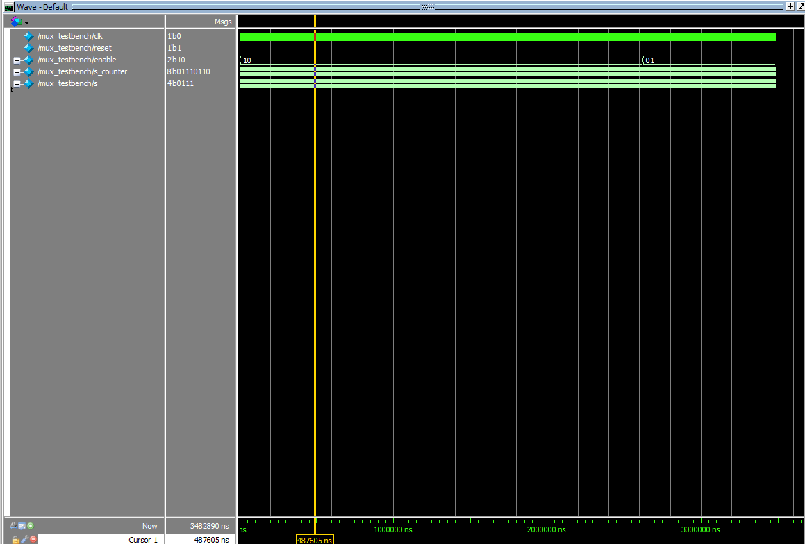

Lab 2
Introduction
In Lab 2, we used a setup similar to the one used in lab 1. This time, however, the goal was to power and program a switch-controlled dual seven-segment display using time-multiplexing and have 5 LEDs that form a binary representation of the sum of the independent switches controlling each display. Thanks to time-multiplexing, the two displays could be powered using the same number of GPIO pins by rapidly switching which display is actively getting powered at rate that makes the displays appear static to our eyes.
Design and Testing Methodology
Since this is functionally the same as what was done in lab 1 – controlling a display with a 4-bit input/switch – the seven_segment module from lab 1 could be reused, as long as the inputs rapidly switch according to the mux’s enable signal. Utilizing the same on-board high-speed oscillator (HSOSC) module that was used in lab 1, the clock signal was divided in order to drive the rate at which power is switched between displays. Using a 25-bit clock that is driven by the HSOSC’s clock signal, the mux module focuses on a specific bit of the clock in order to control the output of the mux, and the value of the enable signals, enable[0] and enable[1]. In this case, it was experimentally determined that the 18th bit of the counter, counter[18], allowed for the displays to appear static without any bleeding. Using two 2N3906 PNP transistors, the current could be selectively sent to one display at a time. Using GPIO pins, enable[0] and enable[1] were each sent to the base of an individual transistor, with the collector of the transistors each being routed to the power pins of one of the displays (more clearly shown in Figure 2).
Depending on the value of counter[18], the mux within the mux module will output a 4-bit value, s, which will be equal to either s1 or s2 (which are 4-bit values controlled by independent switches), while the mux module updates the value of enable[0] and enable[1]. These changes are dictated by enable[0] = counter[18], enable[1] = ~counter[18], and s = counter[18] ? s1 : s2. In the top module, lab2_jc, the clock is generated using the HSOSC module then fed into the mux. The output, s, of the instantiated mux module is then fed into the seven_segment module that then decodes the value of s into its corresponding segments. These are then via GPIO to the display itself. The top module is also responsible for handling the sum of the two inputs, s1 and s2, which it then assigns to led[4:0]. It is important to note that the values of s1 and s2 control display 0 and 1, respectively.
Technical Documentation:
The Git repository containing the source code of this lab can be found here: Lab 2 Repo.
Block Diagram
The block diagram shown in Figure 3 showcases the hierarchy and modules within the top level module, lab2_jc. This includes 3 submodules: HSOSC, mux, and seven_segment. An adder is also present since the top level module handles the sum of the two inputs.
Schematic
As shown in Figure 2, the hardware used included: two 4-input dip switches, the UPduino, resistors for the base, seven segment display, and green LEDs, as well as the dual seven segment display itself. Pin assignments are also shown and the value the represent are also shown in the schematic.
Results and Discussion
Testbench Simulation
As shown in Figure 3, the lab 2 workbench successfully demonstrated that the addition of the two input signals, s1 and s2, worked, as well as the switching of the enable signal.

As shown in Figure 4, the mux testbench successfully demonstrated that the right output is provided given that enable[0] or enable[1] is high or low.
As shown in Figure 5, the seven_segment module successfully passed all the test vectors!
Conclusion
It appears that we were able to successfully control a dual seven segment display and 5 LEDs using two 4-input dip switches and time-multiplexing. Both of the testbenches ran and provided information that indicates that implementation was successful. I spent 20+ hours working on this lab.
AI Prototype Summary
After prompting ChatGPT, it created the modules shown in Figure 6.
Lab 2 – E155 Portfolio Lab 2 – E155 Portfolio Lab 2 – E155 Portfolio E155 Portfolio